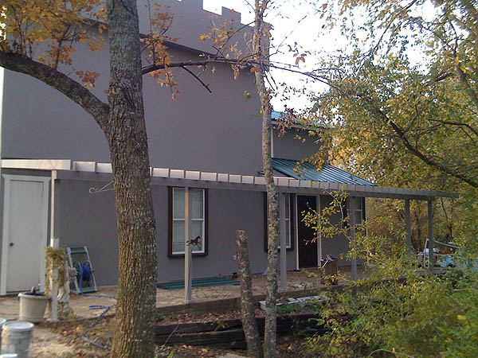
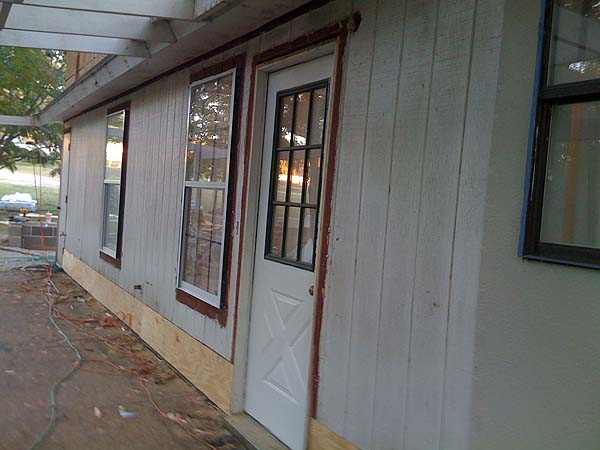
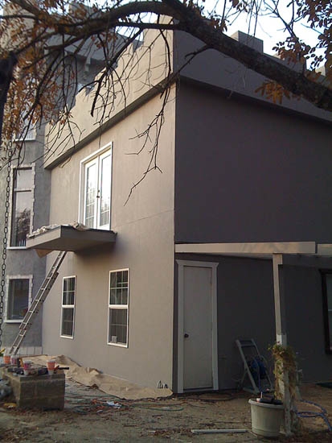
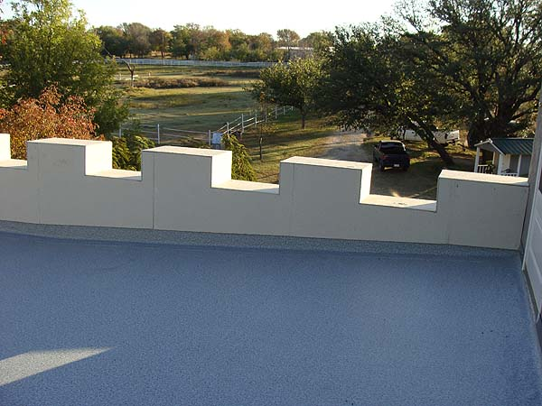
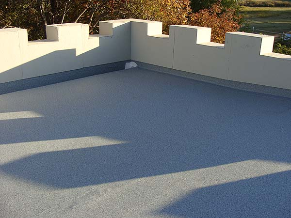
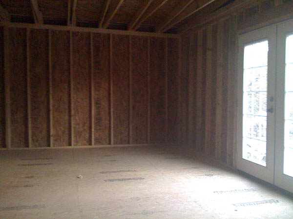
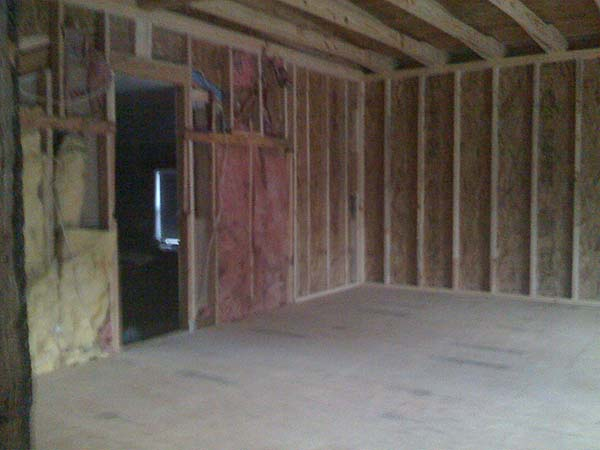
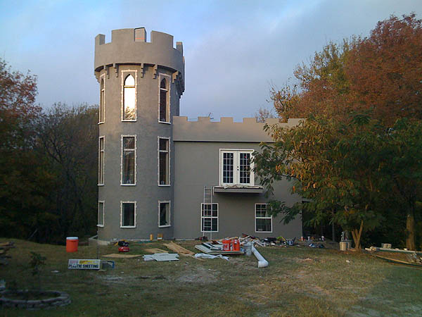

It's hard work every day, but the building
crew has done an amazing job.
We can't believe that our plan is coming
to life.
We drive up the driveway and sit and stare
at our 'castle'.

All the same elements, but a new front
door, new trim and nice concrete siding. I still have plans to replace
the little door in the left of the picture to match the front door.

The porch facing the creek as it was
before we started. Our main goal was to get the new roof on to stop it
raining in, but once the builders were here, we decided to get most of
the exterior renovations finished up.

Trees were trimmed back and corbels
were going up today. We're still thinking of what railing we can put up
on the balcony.

We decided on an IB roofing system
for the top deck. It so much nicer than we were picturing.

There's a hidden gutter on the low
side, and now a giant drain pipe on the front of the house. We're hoping
that gray paint helps it blend in.

The room is ready for finishing inside.
I don't think we're ready yet, though.

Doorways are cut now to get from the
tower and the original second floor to the new room.

Every day is closer to being finished,
and every day we find something new that we want. The quoins should be
going up today.